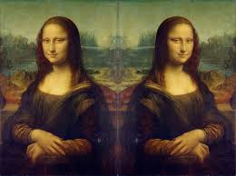
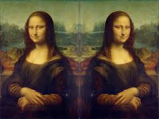

Unite Gallery Tiles Nested
 

Unite Gallery Default
Accordion
Веб-хостинг
З появою і швидким розвитком Інтернет перед користувачами відкрилося багато нових можливостей, зокрема, можливість спілкування. Тепер можна обговорювати різні теми на форумах і отримувати цінні поради, розповідати про себе у блозі, знаходити давніх друзів за допомогою соціальних мереж і багато іншого. Значно ширше поле для діяльності відкриває для користувачів наявність власного сайту. Це можливість заявити про себе, свої захоплення, роботу, компанію. Але створення навіть простого за дизайном чи функціоналом сайту потребує базових знань мов HTML, CSS та JavaScript, навичок обробки зображень, уставляння мультимедійних об'єктів, розміщення веб-документів на серверах Інтернету.
Текстові HTML-редактори
В міру зростання інтересу до створення сайтів, з'явилися й особливі платформи – конструктори сайтів. З їх допомогою користувач будь якого рівня обізнаності може створити власний сайт-візитку, багатосторінковий сайт для компанії або онлайн-магазин. Конструктор сайтів дозволяє сформувати і об'єднати веб-сторінки в цілісну структуру сайту, а також керувати ними, не володіючи спеціальними технічними знаннями і навичками. Створений в конструкторі ресурс розміщується на хмарі - віддаленому сервері-хостингу, збереження і працездатність якого підтримується командою адміністраторів конструктора без втручання користувача.
Інтегровані середовища розробки IDE
Конструктори мають дружній інтерфейс, що буде зрозумілим для непідготовленого користувача. Редагування сторінок, зовнішнього вигляду дизайну і загальне налаштування відбувається в онлайн-режимі за допомогою зручної панелі управління. Переваги конструкторів сайтів Для звичайного користувача, який не має особливих знань і навичок, конструктор є одним з кращих варіантів швидко і якісно створити власний інформаційний ресурс в Інтернеті, розпочати онлайн бізнес або презентувати власні досягнення.
Браузери
Конструкторів для створення сайтів існує значна кількість, вони мають власні особливості, переваги, тому перед вибором варто ознайомитися з їх функціоналом та оцінити зручність роботи. Конструктор сайтів Wix Wix - популярний конструктор, що орієнтується, в першу чергу, на потреби початківців користувачів з нульовими знаннями щодо створення сайтів. Ідеально підходить для створення яскравих за формою і змістом візиток. Сервіс поставляється зі зручним візуальним редактором, в якому більшість дій виконується за допомогою мишки.